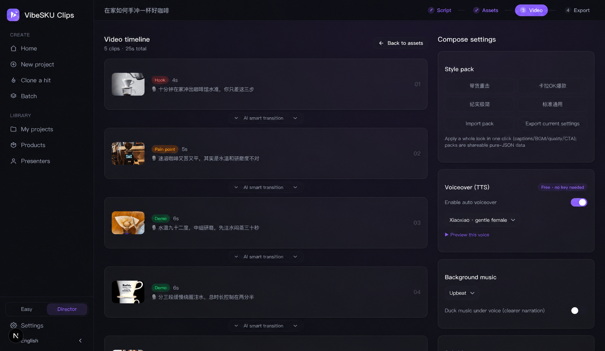

Open source · No watermark · Full videos with zero AI keys
One product photo, videos that sell
Upload a product photo or paste a product link. AI extracts selling points, writes mini-drama and talking-head scripts, keeps your product photo-faithful, adds real moving shots + voiceover + captions + BGM — ready for TikTok Shop, Reels, Shorts, Douyin, Kuaishou and Xiaohongshu.
Open source AGPL-3.0 · data stays on your machine · Docker self-hosting · built-in MCP + CLI — one sentence in Claude / Cursor
↑ All three demos were generated in a single Seedance 2.0 call each (speech, voices and sound are native model output — tap 🔇 for audio; Chinese-language demos). This is the real output of ClipForge's video-model path.
Three steps to a publish-ready video
Drop the product in
Upload a product photo, or paste a product URL for one-click import (title / price / images auto-extracted). Pick your platforms: TikTok Shop, Reels, Shorts, Douyin.
Three sales scripts to pick from
AI extracts selling points and writes scripts across ten styles in four forms (mini-drama / plot twist / unboxing / talking-head…), with golden-3-second hooks, hashtags and cover copy built in.
Voiceover, captions, export
Photo-faithful product shots + real moving clips, auto voiceover, burned captions, price tag, product card, BGM; toggle 9:16 / 3:4 and copy the caption pack — ready to post.
Every make-or-break for commerce video,
built as an exclusive capability
Real moving shots, not a slideshow
The image-to-video quality path: a motion-prompt engine locks the product, keyframe chaining generates transitions inside the clip so cuts are seamless; camera intensity switches soft / mid / bold, and an unsatisfying shot can be re-run keeping its keyframe — verified with real A/B calls, the product never warps or drifts.
Product fidelity
Image-to-image locks your original product — backgrounds and lighting change, the product itself never does.
Mini-drama selling
Ten script styles: mini-drama / plot twist / street interview / unboxing / product POV… multi-character dialogue with a free dedicated voice per character.
A full video at $0
Free stock + free AI voiceover (EN / 中 / 日 / 한 / ES) + free BGM + local compositing — no API key, no watermark, unlimited.
Compliance built in
AIGC labeling, pre-publish throttle self-check and an ad-law banned-term scan with rewrite hints — it ships compliant by default.
Agent-native + batch
MCP + CLI + agent Skill: paste a product link in Claude / Cursor and get a video; batch-render 10 products and A/B the cuts.
Real UI, not mockups



Outsourcing & other tools vs ClipForge
| Stage | ClipForge | Traditional outsourcing |
|---|---|---|
| Scriptwriting | AI writes 3 scripts in 30s | Director, 1–2 hours |
| Asset creation | AI images / moving shots + free stock, minutes | Shoot + retouch, 1–3 days |
| Editing | Auto compositing + transitions + captions + voiceover | Editor, 2–4 hours |
| Multi-platform | One-click TikTok / Reels / Shorts / Douyin export | Manual ratio / captions |
| Compliance | AIGC label + self-check + banned-term scan, default on | Human memory, miss = throttled |
| Cost | $0 on the free path, no watermark | Hundreds per video |
| What you care about | ClipForge | OSS peers (MoneyPrinterTurbo etc.) | Commercial AI video SaaS | CapCut-style editors |
|---|---|---|---|---|
| Photo-faithful product | ✅ image lock | ❌ stock only, product absent | ⚠️ partial | ➖ manual |
| Moving-shot quality | ✅ i2v + seamless transitions | ❌ stills stitched | ✅ mostly i2v | ➖ your footage |
| Mini-drama + multi-voice | ✅ ten styles, voice per character | ❌ single narrator | ⚠️ avatar talking-heads | ❌ manual |
| China-platform compliance | ✅ default on | ❌ | ❌ overseas-focused | ⚠️ partial |
| $0 + no watermark + local | ✅ open source, self-hosted | ✅ | ❌ paid / cloud / watermark | ⚠️ paid pro, cloud |
Based on public materials as of 2026-07; features evolve. ClipForge is unaffiliated with all products above — for evaluation only.
Frequently asked
Is ClipForge free?
Yes. Open source (AGPL-3.0), no watermark, unlimited videos. Free stock assets + free Microsoft Edge TTS voiceover + free BGM + local FFmpeg compositing — a full video with zero AI keys. Bring your own key for premium visuals (30+ models: GPT Image 2, Seedance 2.0, Kling 3.0…).
Will it distort my product photo?
No — this is the core guarantee: image-to-image locks the original product, so backgrounds and lighting change but the product itself never does. What buyers see is what they get.
Will the video look like an AI slideshow?
No. With a video model configured, every shot becomes a real moving clip via image-to-video: a motion-prompt engine keeps the product locked, keyframe chaining generates transitions inside the clip so cuts are seamless, camera intensity is adjustable, and any single shot can be re-run without touching the rest. The demos at the top of this page are raw Seedance 2.0 output.
How is it different from MoneyPrinterTurbo, CapCut or commercial AI tools?
Open-source peers mostly stitch keyword-matched stock stills where your product never appears; commercial SaaS charges per video, uploads assets to the cloud and watermarks free tiers; CapCut is manual-first editing. ClipForge is free and open source with no watermark, photo-faithful products, real moving shots, mini-drama multi-voice dialogue, and compliance built in — all local. See the comparison table above.
Do I need to appear on camera?
No. Videos are composed from your product photo, AI visuals, free voiceover and captions — fully faceless. One person can ship dozens of videos a day.
Which platforms does it export for?
TikTok Shop / Reels / Shorts 9:16, Xiaohongshu 3:4, Douyin, Kuaishou and WeChat Channels — one-click format switching, plus auto-generated hashtags, cover copy and engagement prompts.
How do I run it?
Two ways: download the Windows / macOS desktop app, or self-host the open-source Next.js web app (Docker supported). It also ships an MCP server, a CLI and an agent skill, so Claude or Cursor can produce a video from a product link in one sentence.
Your next best-seller starts with one product photo
Free · open source · no watermark — full videos with zero AI keys.